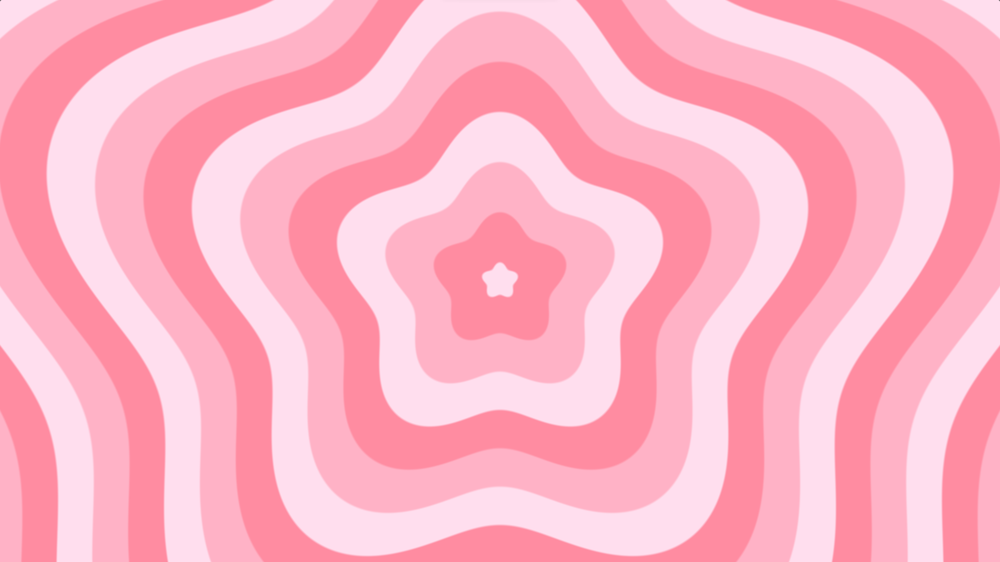

Zoom in Stars Shader

A dynamic GLSL shader that simulates stars growing and expanding from the center of the screen.
I used math, functions like sin() and smoothstep(), and also optimized the shader
for different screen sizes, ensuring it looks great on any resolution.
This project highlights my skills in shading, and I love the way it shows how cool maths can look ;)
Technical Highlights
- 🧮 Use of trigonometric functions (atan(), sin(), length()) for star positioning and oscillation
- 🌈 Smooth color blending using smoothstep() and mix()
- ⌛ Animation control with time-based transitions for star growth
- ➰ Performance optimization with iterative methods for star calculations